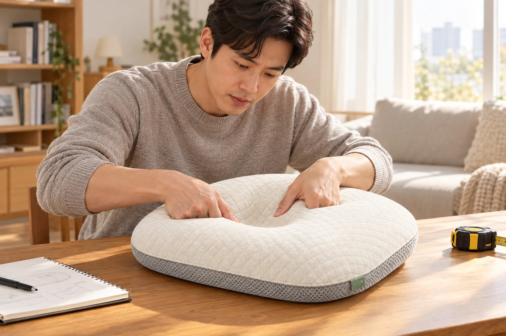

숨 쉬는 구조
열이 머물지 않도록, 세 방향으로 통하게.
3D 에어메쉬 코어와 통기 홀이 뒤통수 열을 아래로 흘려보냅니다. 통기도는 공인기관 시험 수치로 공개합니다.
[ 프리미엄 아기 베개 솜결 ]
보호자가 지켜보는 깨어 있는 시간에, 낮고 단단하고 숨 쉬는 구조로.
[ 브랜드 이야기 ]
그래도 부족했습니다.
'내 아이가 매일 머리를 대는 자리'라는 기준 앞에서 시중의 어떤 제품도 닿지 못했습니다. 너무 높거나, 너무 푹신하거나, 뒤통수가 땀으로 젖거나, 커버를 벗길 수 없어 통째로 빨아야 했습니다.
그래서 기준을 직접 만들기로 했습니다. 대구의 작은 작업실에서, 우리 아이가 먼저 써 보고 통과한 것만 '솜결'이라는 이름을 붙입니다. 통과하지 못하면 내놓지 않습니다.


[ 아빠의 검수 기준 ]
[ 가까이 보기 ]
퀼팅 한 땀, 메쉬 한 칸, 라벨 한 장까지. 매일 닿는 물건일수록 기준은 더 까다로워야 하니까요.


부모가 직접 만들고 직접 책임지는 프리미엄 아기 베개
대구에서 재단하고 봉제합니다.
원단 입고부터 봉제, 검수, 포장까지 한 작업실에서 합니다. 어느 수량이든 같은 사람, 같은 기준으로 만듭니다.
쓰다 보면 커버는 낡습니다.
구매 후 1년 안에 커버 1장을 무상으로 바꿔 드립니다. 색상은 네 가지 중 고를 수 있습니다.
숫자는 시험한 것만 말합니다.
공인기관 시험 항목과 결과를 제품 페이지에서 그대로 열람할 수 있습니다. 효능 표현 대신 수치로 설명합니다.
[ 우리의 믿음 ]
베개는 채우는 게 아니라 쌓는 것이라고 생각합니다. 여덟 겹을 한 겹씩 이유를 두고 쌓은 뒤에야 커버를 씌웁니다. 그래서 우리는 '충전'이 아니라 '설계'라고 말합니다.
8개의 층. 하나의 완성도.
피부에 닿는 겉면. 오가닉 코튼 100%, 지퍼로 분리합니다.
커버가 밀리지 않도록 얇게 누볐습니다. 세탁 뒤에도 모양이 유지됩니다.
세 방향으로 공기가 지나는 입체 메쉬. 통째로 물세탁이 됩니다.
중앙 오목면에 뚫린 구멍으로 뒤통수 열이 아래로 빠져나갑니다.
눌렀을 때 서서히 돌아오는 지지층. 푹 꺼지지 않는 단단함의 기준입니다.
머리가 놓이는 자리를 완만하게 낮춰 한 점에 무게가 몰리지 않게 합니다.
베이스 아래 두 장을 동봉. 0, 2, 4 mm로 월령에 맞춰 조절합니다.
매트 위에서 밀리지 않도록 바닥면에 점 패턴을 넣었습니다.
스크롤하면 한 겹씩 벌어집니다

[ 숫자로 보는 신뢰 ]
솜결이 숨기지 않고 보여 드리는
네 가지 지표입니다.
[ 왜 솜결인가 ]
베개 하나에 담은 네 가지 약속. 통기, 높이, 세탁, 그리고 자라는 속도까지.

질병관리청이 권하는 실내 온도는 22~24도입니다. 3D 에어메쉬 코어와 통기 홀이 뒤통수 열을 아래로 흘려보내 땀이 고이지 않게 합니다. 통기도는 공인기관 시험 수치로 공개합니다.
푹신한 침구는 아기에게 안전하지 않습니다. 그래서 솜결은 5 cm 높이의 저반발 베이스에 완만한 오목면을 두어, 한 점에 무게가 몰리지 않으면서도 꺼지지 않습니다.

커버는 지퍼로 벗겨 30도 물세탁. 건조기는 쓰지 않습니다. 메쉬 코어는 통째로 손세탁해 틈새 먼지까지 씻어냅니다. 세탁 20회 뒤 수축률 2% 이내를 시험했습니다.
베이스 아래 2 mm 인서트 패드 두 장을 동봉합니다. 1~2개월 0 mm, 3~4개월 2 mm, 5개월부터 4 mm. 뒤집기를 시작하면 사용을 멈춥니다.
[ 제품 사양 ]
한눈에 보이지 않는 부분까지 부모의 시선으로 정했습니다. 수치는 시험한 것만 적습니다.

[ 세 가지 약속 ]
열이 머물지 않도록, 세 방향으로 통하게.
3D 에어메쉬 코어와 통기 홀이 뒤통수 열을 아래로 흘려보냅니다. 통기도는 공인기관 시험 수치로 공개합니다.
효능 대신 수치로, 광고 대신 성적서로.
효능을 단정하는 말은 쓰지 않습니다. 높이 mm, 세탁 횟수, 통기도처럼 시험할 수 있는 것만 적습니다.
커버는 벗겨서, 코어는 통째로.
지퍼 커버는 30도 물세탁, 메쉬 코어는 손세탁. 세탁 20회 시험으로 수축률 2% 이내를 확인했습니다.
[ 결에서 쓰임까지 ]
퀼팅 한 땀에서 깨어 있는 오후까지. 솜결이 만들어지는 순서대로 보여 드립니다.

공인기관 통기도 시험 결과를 받은 뒤 실제 수치로 교체합니다. 현재는 자리 표시입니다.
[ 실제 공간 ]


모든 장면은 보호자가 곁에서 지켜보는 깨어 있는 시간입니다. 수면 중 사용 장면은 담지 않습니다.
[ 안전 안내 ]
질병관리청은 아기를 똑바로 눕혀 재우고, 잠자리에 베개와 쿠션, 인형을 두지 말 것을 권합니다. 솜결은 이 권고를 먼저 안내하고, 그 다음에 제품을 말합니다.
수면 중 사용을 권하지 않습니다.
보호자가 지켜보는 깨어 있는 시간에 사용하세요.
뒤집기를 시작하면 사용을 중단하세요.
[ 자주 묻는 질문 ]
생후 1개월부터 뒤집기를 시작하기 전까지, 보호자가 지켜보는 깨어 있는 시간에 사용합니다. 1~2개월은 인서트 없이 0 mm로 시작하세요.
아니요. 수면 중 사용을 권하지 않습니다. 질병관리청 권고에 따라 잠자리에는 베개를 두지 말고, 깨어 있는 시간에만 사용하세요.
커버는 지퍼로 분리해 30도 물세탁하고 건조기는 쓰지 않습니다. 메쉬 코어는 통째로 손세탁한 뒤 그늘에서 말립니다. 세탁 20회 뒤 수축률 2% 이내를 시험했습니다.
베이스 아래 지퍼 안에 2 mm 인서트 패드를 넣습니다. 1~2개월 0 mm, 3~4개월 2 mm, 5개월부터 4 mm가 기준이며 아기의 어깨 폭에 따라 조절하세요.
사용을 중단하세요. 뒤집기 뒤에는 아기가 스스로 자세를 바꾸므로 베개가 필요하지 않습니다. 커버는 세탁해 보관하고, 이후 선물로 보내실 경우 안전 안내 카드를 함께 넣어 드립니다.
[ 이제, 직접 만져 보세요 ]
먼저 만져 보고, 눌러 보세요.
단단한 결이 답해 줄 거예요.
평일 09~18시 · 빠른 응답